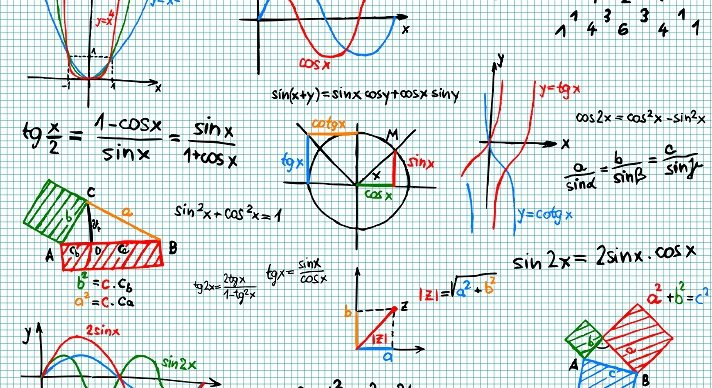
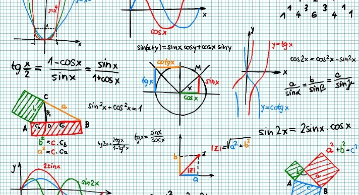
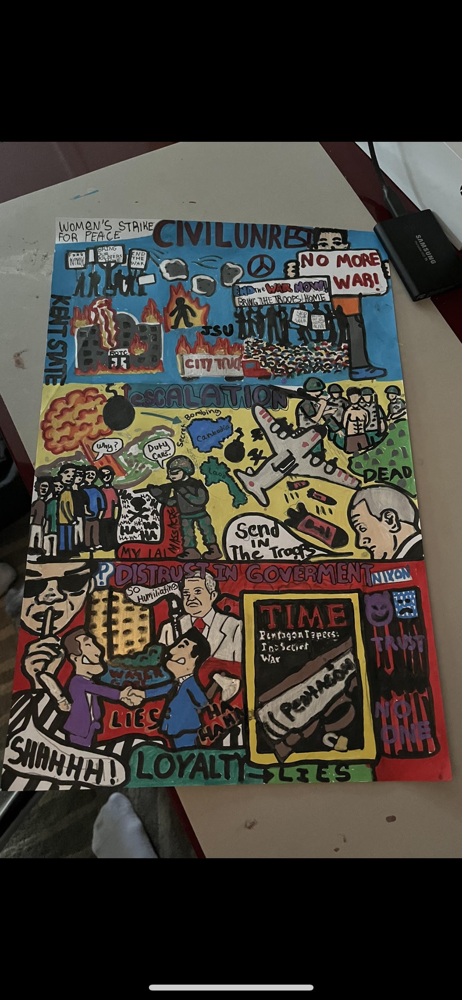

During the 2022-2023 School Year I took 6 classes and they all went really well. Us History gave me a great challenge and I worked hard. I learned a lot in Ap computer principles about the science of code and it was a great class. Digital design was my favorite class and I can't wait to continue my digital art future. I liked math class and did very good. Apes was fun and English was a great class.
This is my history project and I am very proud of it